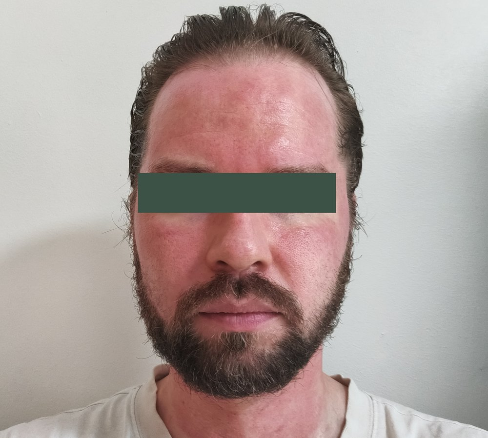

Miksi jälkihoito ratkaisee lopputuloksen
Mikroneulauksessa ihoon tehdään tuhansia mikroskooppisen pieniä kanavia jotka käynnistävät ihon oman uudistumisprosessin. Kanavat sulkeutuvat pinnalta muutamassa tunnissa, mutta ihon syvempi paranemis- ja kollageeninmuodostusprosessi jatkuu viikkoja. Sillä miten hoidat ihoa tuon ajanjakson aikana on suora vaikutus lopputulokseen.
Hyvin hoidettu iho toipuu ilman komplikaatioita, tuottaa optimaalisen kollageenivasteen ja säilyttää saavutetut tulokset pidempään. Huonosti hoidettu iho voi kokea tarpeetonta ärsytystä, viivyttynyttä toipumista tai jälki-inflammatorista pigmentaatiota (PIH). Näiden kahden lopputuloksen välinen ero ei aina synny suurista tekemisistä; pienet päivittäiset valinnat ratkaisevat.
Ensimmäiset 24 tuntia
Heti hoidon jälkeen iholla esiintyy punoitusta ja kevyttä kuumotusta. Tämä on täysin normaali fysiologinen vaste ja merkki siitä, että ihon oma uudistumisprosessi on käynnistynyt. Punoitus laskee tyypillisesti ensimmäisen vuorokauden aikana, toisilla nopeammin ja toisilla hitaammin.

Iho voi tuntua herkältä, kuivalta ja kireältä. Voit tuntea lievää polttavaa tai pistelevää tunnetta ensimmäisten tuntien ajan. Nämä helpottuvat itsestään.
Käytä: Studiolta saamasi hoitava voide, joka sisältyy hoidon hintaan. Voit levittää sitä ohuena kerroksena tarpeen mukaan koko ensimmäisen vuorokauden ajan. Se antaa iholle rauhoittavan kalvon, tukee ihon oman suojakerroksen palautumista ja vähentää kuivumista.
Vältä ensimmäiset 24 tuntia:
- Meikkiä. Iho tarvitsee aikaa palautua ennen kuin sille voi lisätä mitään ylimääräistä.
- Auringonottoa. Iho on erityisen herkkä UV-säteilylle heti hoidon jälkeen. Jos joudut ulos, käytä laajareunaista hattua ja pysy varjossa.
- Retinoideja, happotuotteita ja voimakkaita aktiiveja. Nämä palauttavat rutiiniin myöhemmin, mutta eivät nyt.
- Kuumaa suihkua, saunaa ja voimakasta liikuntaa. Hikoilu ja korkea lämpötila ärsyttävät tuoretta ihoa ja voivat pidentää punoitusta.
- Ihon kutistelua tai kuoriutumista. Anna ihon toipua rauhassa.
Päivät 1–3
Toisena päivänä punoitus on tavallisesti selkeästi laskenut. Iho saattaa tuntua kuivalta tai karhealta ja pintakerros voi hilseillä kevyesti. Tämä on merkki siitä, että vanha iho uusiutuu ja korvautuu uudella. Tämä on täysin toivottu ja normaali reaktio.
Aloita perusrutiini varovasti:
- Puhdistus. Käytä hellävaraista puhdistustuotetta joka ei sisällä alkoholia, happoja tai voimakkaita aktiiveja. Haalea vesi, ei kuumaa. Kuivaa iho taputellen, ei hierten.
- Kosteutus. Kevyt, hajusteeton kosteusvoide 1–2 kertaa päivässä. Ceramideja tai hyaluronihappoa sisältävät tuotteet ovat hyvä valinta ihon oman suojakerroksen tueksi.
- Aurinkosuoja. SPF 30–50 joka päivä, myös sisällä jos olet lähellä ikkunaa. UV-säteily on nyt suurin uhka lopputulokselle.
Meikkiä voit alkaa käyttää toisena päivänä varovasti, mineraalipohjaiset tuotteet ovat parempia kuin voimakkaasti pigmentoidut nestemäiset meikit. Vältä siveltimien ja sienten kovaa hankausta.
Päivät 4–7
Ensimmäisen viikon lopulla iho on jo pitkälle toipunut. Kuivuus on vähentynyt, mahdollinen hilseily on poistunut, ja iho voi tuntua tavallista sileämmältä ja kirkkaammalta. Tämä on välikausi ennen kuin syvempi kollageenityö näkyy tuloksena.
Voit palauttaa varovasti:
- Normaali meikki ja meikinpuhdistus (edelleen hellävarasti)
- Kevyt liikunta ja normaali fyysinen rasitus
- Uinti puhtaassa vedessä (uimahallien klooria kannattaa vielä välttää muutama päivä)
Vältä vielä: retinoideja, glykolihappoa, salisyylihappoa, entsyymikuorintoja, mikrodermabraasiota ja voimakkaita kotikäyttöisiä kuorintaharjoja.
Viikot 2–4
Toisen viikon aikana voit varovasti palauttaa aktiivituotteet käyttöön yksi kerrallaan, ei kaikkia yhtä aikaa. Aloita matalilla pitoisuuksilla, käytä joka toinen ilta, ja tarkkaile ihon reaktiota. Jos iho kestää hyvin, voit lisätä käyttöä.
Kolmannen ja neljännen viikon aikana iho on tavallisesti täysin palautunut ja voit jatkaa normaalia ihonhoitorutiinia. Kollageenin muodostuminen jatkuu ihon syvemmissä kerroksissa vielä pitkään, mutta pinnalla iho on jo tasapainossa.
Jos olet sarjahoidossa, seuraava hoitokerta osuu tähän kohtaan: neljän viikon välein. Sarja on ajoitettu tarkasti niin että kollageenimuodostuksen huippu osuu seuraavan hoitokerran hyväksi.
UV-suoja koko sarjan ajan
Aurinkosuoja on jälkihoidon tärkein yksittäinen asia. Ei ole liioittelua sanoa että se voi ratkaista sarjan lopputuloksen enemmän kuin mikään muu jälkihoitovalinta. Tämä ei ole hoitolan sääntö vaan ihonhoidon vahvin yksittäinen tutkimustulos: satunnaistettu tutkimus 903 aikuisella osoitti päivittäisen aurinkosuojan hidastavan fotovanhenemista neljän ja puolen vuoden seurannassa.
Miksi? Mikroneulauksen jälkeen iho on herkempi UV-säteilylle useiden viikkojen ajan, koska ihon omaan suojakerrokseen on tehty mikrokanavia ja koska ihon uudistumisprosessi on kesken. UV-altistus juuri tässä vaiheessa voi aiheuttaa:
- Jälki-inflammatorista pigmentaatiota (PIH), joka voi jättää pysyviä tummempia läiskiä hoitoalueelle
- Punoituksen pitkittymistä ja pinnan ärsytystä
- Kollageenin ristikkäissidosten häiriintymistä, joka heikentää lopullista tulosta
SPF 30–50 päivittäin koko sarjan ajan, ja mielellään laajakirjoinen suoja (UVA + UVB). Talvellakin. Nyrkkisääntö: jos on päivänvaloa ulkona, käytä suojaa. Loppukesästä syksyyn UV-indeksi laskee Suomessa luonnostaan, mikä helpottaa päivittäisen suojan noudattamista sarjan aikana. Syyskauden ajoitusta käsittelevä artikkeli käy läpi mitä tämä tarkoittaa sarjan aloitushetken kannalta.
Muista suoja myös kasvojen ulkopuolelle. Jos hoidossa on ollut mukana kaula, dekoltee tai kämmenselät, aurinkosuoja unohtuu näiltä alueilta helpommin kuin kasvoilta, vaikka ne ovat auringolle vähintään yhtä alttiita. Näiden alueiden jälkihoidossa on myös muita eroja: käyn ne läpi lisäalueita käsittelevässä artikkelissa.
Mitä välttää koko sarjan ajan
Jos olet mikroneulaussarjassa, seuraavat asiat kannattaa jättää tauolle koko sarjan ajaksi, ei vain yhden hoitokerran jälkeen:
- Muut invasiiviset ihohoitomenetelmät: laser, IPL, radiofrekvenssi, mikrodermabraasio, kemialliset kuorinnat. Iho ei ehdi rauhoittua kunnolla jos päälle laitetaan aina uusi ärsyke.
- Uusia aktiivi-ihonhoitotuotteita: älä aloita uutta retinolia, hydrokinonia, azelaiinihappoa tms. sarjan aikana. Vakiintunutta rutiinia voi jatkaa hoitokertojen välissä.
- Fillereitä ja botuliinia neulattavalle alueelle: nämä pitää ajoittaa erikseen mikroneulaussarjan ulkopuolelle. Kysy studiolta jos suunnitteilla.
- Voimakasta hierontaa tai ihoterapiaa hoidetulle alueelle välittömästi hoitokertojen jälkeen.
Jos iho tarvitsee tukea sarjan aikana
Toisinaan toipuminen tuntuu hitaalta tai iho on sarjan aikana tavallista ärtyneempi. Silloin iholle voi tehdä muutakin kuin odottaa.
ProXN-kasvohoito ei riko ihoa. Se vähentää tulehdusta ja vahvistaa ihon omaa suojakerrosta, ja se on kehitetty myös kajoavien hoitojen jälkeiseen palautumiseen. Laser, kuorinta ja mikrodermabraasio kuormittavat ihoa uudelleen, minkä vuoksi ne jätetään sarjan ajaksi pois. ProXN vaikuttaa toiseen suuntaan.
Ajoitus sovitaan aina studiolla, koska se riippuu siitä missä kohtaa sarjaa ollaan ja miten iho on hoitoihin vastannut. Hoitoa ei tehdä heti mikroneulauksen päälle, vaan hoitokertojen väliin. Kerro hoitokerralla jos toipuminen on tuntunut tavallista raskaammalta, niin katsotaan tarvitseeko sarjan rytmiä tai sisältöä muuttaa.
Hälytysmerkit: milloin ottaa yhteyttä
Suurin osa mikroneulauksesta toipuu ilman komplikaatioita. Jotkin merkit ovat kuitenkin syy ottaa yhteyttä studioon tai lääkäriin:
- Voimakas kipu joka kestää yli 24 tuntia tai pahenee
- Voimakas turvotus joka ei laske toisena päivänä
- Punoituksen laajeneminen tai epänormaali kuumotus
- Rakkuloita, epäselvää nestettä tai voimakas kutina
- Kellertävä eritys tai muut infektion merkit
- Herpesinfektion aktivoituminen (rakkuloita huulissa tai lähialueella)
- Tumman läiskän ilmestyminen hoitoalueelle päivien tai viikkojen kuluttua (mahdollinen PIH)
Ota yhteyttä sähköpostitse asiakaspalvelu@studiomahla.fi jos jokin edellä mainituista ilmenee. Kuvat auttavat arvioinnissa. Voimakkaiden oireiden kohdalla ota yhteys lääkäriin tai päivystykseen.
Kotihoidon rooli sarjan tulosten säilyttämisessä
Sarjahoidon tulokset kestävät tyypillisesti vuosia, mutta niiden säilyminen riippuu myös jokapäiväisestä kotihoidosta. Kollageenin luonnollinen väheneminen jatkuu ikääntymisen myötä, ja hyvä perusrutiini hidastaa sitä.
Perusrutiini joka kannattaa vakiinnuttaa sarjan jälkeen:
- Aamu: hellävarainen puhdistus, antioksidantti (esim. C-vitamiini), kosteusvoide, aurinkosuoja
- Ilta: hellävarainen puhdistus, retinoidi (2–3 kertaa viikossa aloittaen), kosteusvoide
- UV-suoja päivittäin. Tämä ei koske vain sarjan aikaa vaan on ihonhoidon tärkein yksittäinen tekijä pitkällä aikavälillä.
Ensikäynnillä käymme läpi ihonhoitorutiinisi ja suosittelemme tarvittavat muutokset yksilöllisesti. Emme myy kotihoitotuotteita tarpeettomasti, mutta jos rutiinissasi on selkeitä puutteita, kerromme niistä.
Yhteenveto: tarkistuslista jokaiseen jälkihoitovaiheeseen
- Ensimmäiset 24 tuntia: vain studiolta saatu hoitava voide, ei meikkiä, ei aurinkoa, ei happoja/retinoideja, ei saunaa/liikuntaa
- Päivät 1–3: hellävarainen puhdistus + kosteus + SPF 30–50, meikin voi palauttaa toisena päivänä varovasti
- Päivät 4–7: normaali meikki ja liikunta OK, retinoidit ja hapot vielä tauolla
- Viikot 2–4: aktiivit varovasti käyttöön yksi kerrallaan, matalat pitoisuudet ensin
- Koko sarjan ajan: SPF päivittäin, ei muita invasiivisia hoitoja, ei uusia aktiiveja
- Hälytysmerkit: voimakas kipu, laajeneva punoitus, infektion merkit → yhteys studioon
Lue lisää
Mitä ensikäynnillä tapahtuu käy läpi ensimmäisen käynnin kulun ja mitä studiolta saat mukaan. Mikroneulauksen sarjahoito selittää miksi neljän viikon väli on kriittinen ja miten kollageenimuodostus etenee. Aknearpien hoito mikroneulauksella kertoo miksi arpialueen punoitus on tavallista voimakkaampaa ja mitä se tarkoittaa jälkihoidon kannalta. Mikroneulauksen täydellinen opas antaa kokonaiskuvan hoidosta.
Lähteet
- Hughes MCB, Williams GM, Baker P, Green AC. Sunscreen and prevention of skin aging: a randomized trial. Ann Intern Med. 2013;158(11):781–790. doi.org/10.7326/0003-4819-158-11-201306040-00002